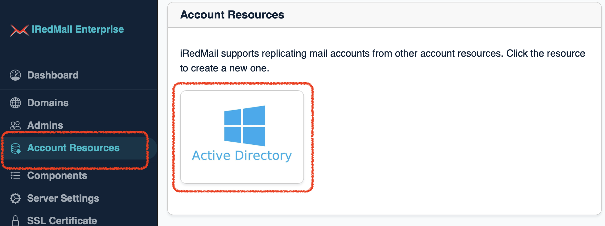
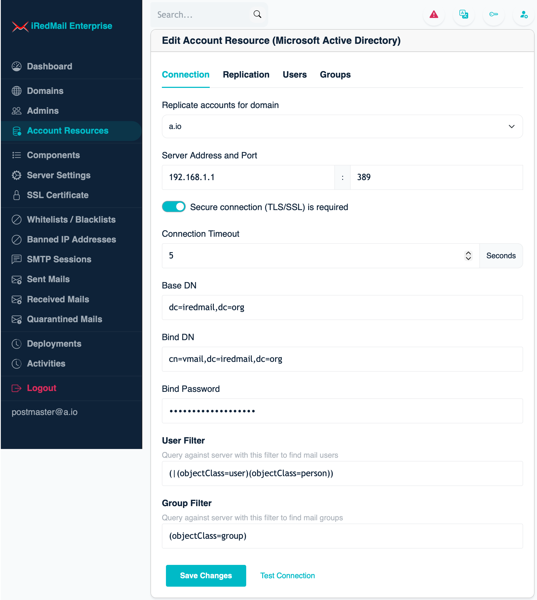
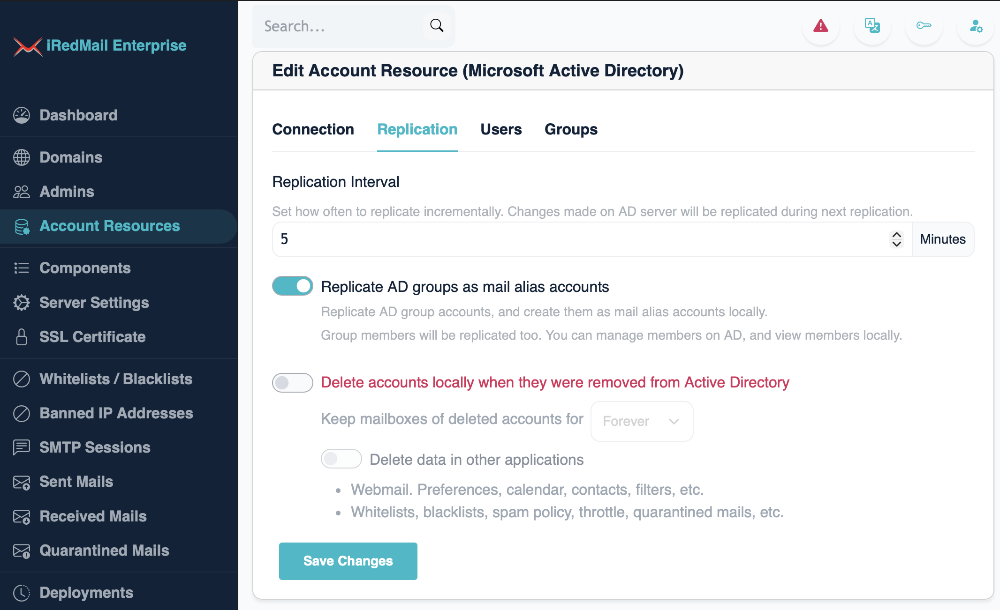
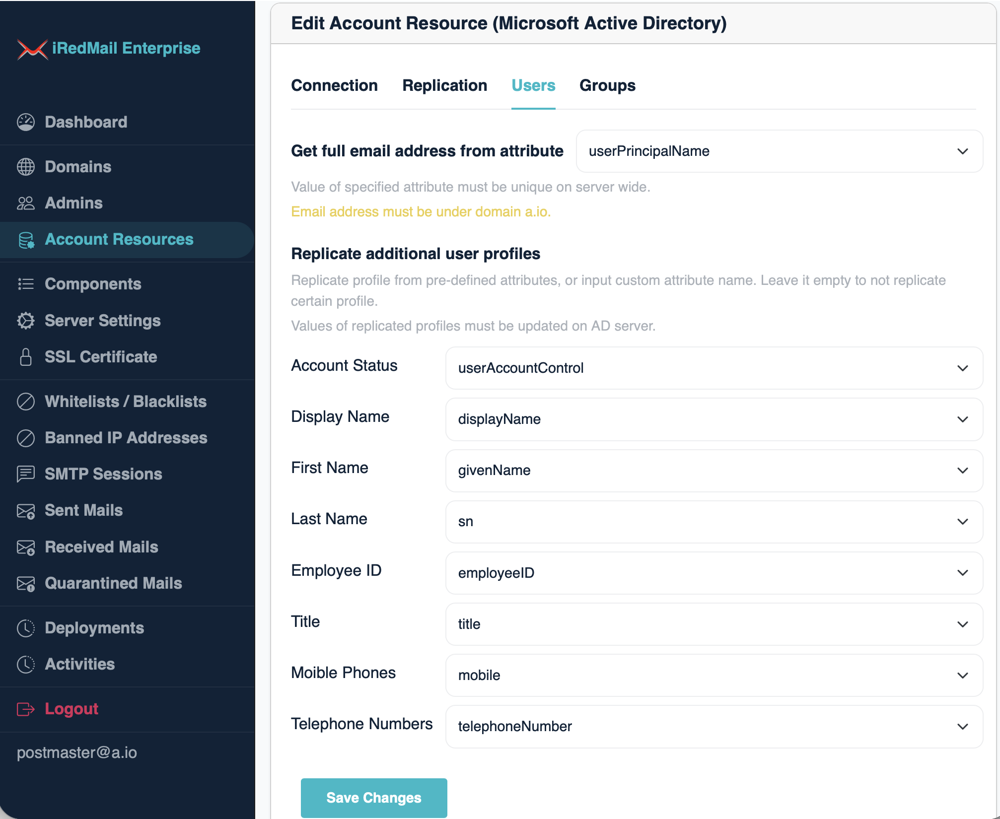
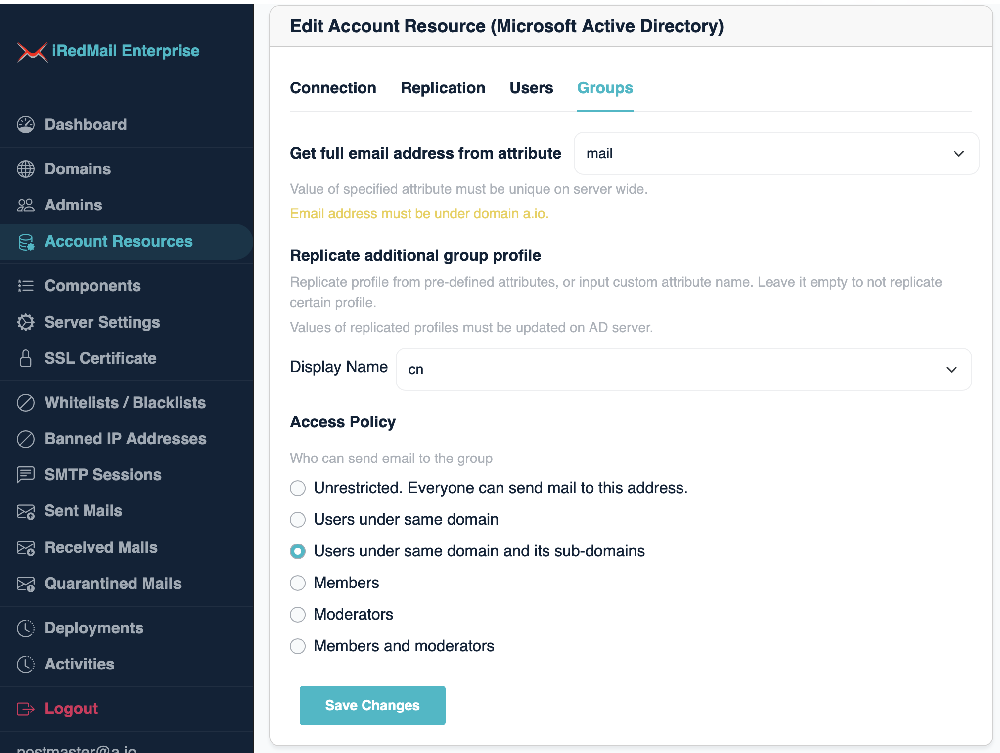
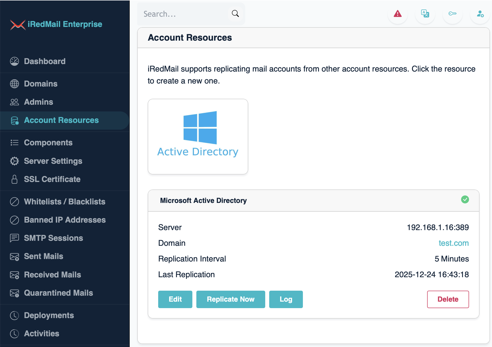

Since iRedMail Enterprise Edition v1.6.0 ("EE" for short), EE supports replicating mail accounts from a Microsoft Active Directory ("AD" for short) server.
You can setup such replication anytime after iRedMail initial setup, with any backend database (MariaDB, PostgreSQL or OpenLDAP).
iRedMail retrieves full email addresses of mail accounts from specified LDAP attributes on AD server, the email address must end with target domain, otherwise these accounts will not be replicated to iRedMail server.
For example, you choose to replicate mail accounts from AD to email domain
example.com which is hosted on iRedMail server, and retrieve full email
addresses of AD user accounts from LDAP attribute userPrincipalName, then
the value of userPrincipalName must be a valid email address ends with
@example.com.
Please login to EE as global admin, then click Account Resource on left
sidebar, it shows you supported server types.

Click the Active Directory icon to add AD as account resource.
    